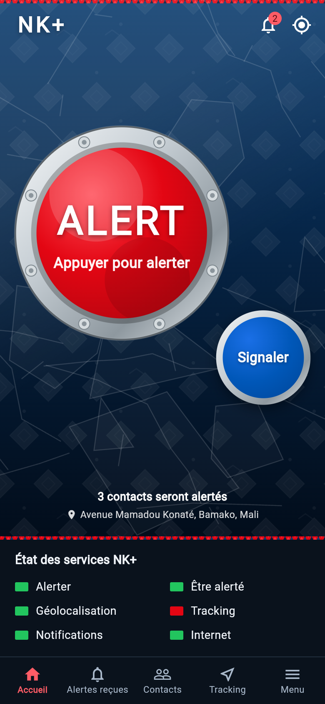
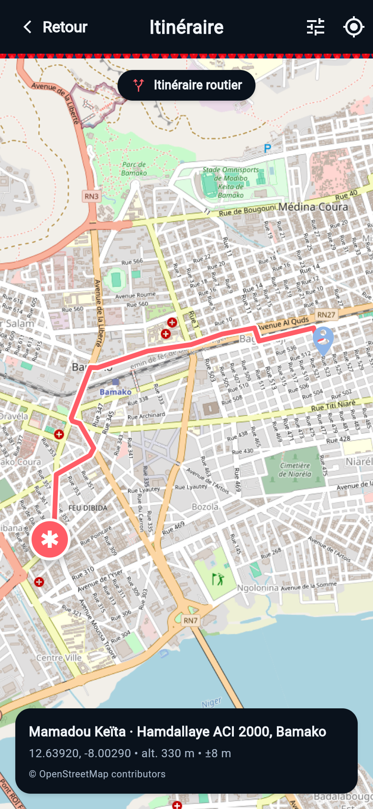
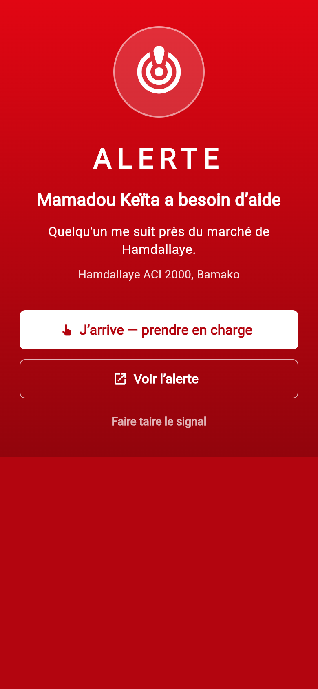

Créez votre compte
Inscrivez-vous, enregistrez votre numéro et complétez votre profil.
Application d'alerte géolocalisée · Mali
NK+ prévient votre réseau de confiance en quelques secondes : position GPS, itinéraire, carnet de santé et alarme sur le téléphone du destinataire.

Comment ça marche
Pas de surveillance permanente, pas de compte à créer pour vos proches sans leur accord : un réseau de confiance, clair et réciproque.
Inscrivez-vous, enregistrez votre numéro et complétez votre profil.
Ils reçoivent une invitation et acceptent. Le lien devient réciproque.
Votre position, le type d'urgence et votre carnet de santé partent ensemble.
Ils sont guidés par l'itinéraire et peuvent signaler qu'ils arrivent.
Fonctionnalités
NK+ reste simple en situation de stress : un bouton, une alerte, des proches qui savent quoi faire.
Votre position GPS est transmise avec l'alerte, pour que vos proches sachent exactement où aller.
Chaque lien est accepté des deux côtés. Personne ne peut vous alerter sans votre accord.
Le téléphone du destinataire pulse, vibre et flashe : une alerte difficile à manquer.
Un appui sur la notification ouvre la carte et le trajet routier jusqu'à la personne en danger.
Groupe sanguin, allergies, traitements : les informations utiles arrivent avec l'alerte.
Un compte à rebours pour vos trajets à risque. Sans désactivation, l'alerte part automatiquement.
De bout en bout
Chaque seconde compte. NK+ réduit le temps entre l'urgence et la première personne qui peut agir.
L'application en images
Voici NK+ tel qu'il est utilisé à Bamako : l'accueil, l'itinéraire vers un proche et l'écran d'alerte reçue.


Pour qui ?
Déployé d'abord à Bamako, NK+ s'adapte à votre quotidien, que vous soyez seul, en déplacement ou responsable d'autres personnes.
Rassurer les parents, les enfants et les proches éloignés, sans appels en cascade.
Rentrer tard, prendre les transports ou voyager avec un réseau d'amis fiable.
Un geste simple, un carnet de santé transmis et des enfants prévenus immédiatement.
Mines, chantiers, logistique : protéger les équipes qui travaillent loin des centres.
Vos données
NK+ ne vend pas vos données, ne vous suit pas en permanence et ne partage votre position qu'avec les personnes que vous avez acceptées.
NK+ ne remplace pas les services d'urgence. En cas de danger immédiat, contactez les secours.
Questions fréquentes
Non. NK+ prévient vos proches et leur transmet les informations utiles. En cas de danger immédiat, appelez les secours. L'application est un complément, pas un service public d'urgence.
L'essentiel de l'application reste consultable hors ligne. L'envoi d'une alerte à distance nécessite une connexion ; vos informations enregistrées restent disponibles. Un mode SMS de secours est prévu.
Non. Votre position n'est transmise que lorsque vous déclenchez une alerte ou activez le mode suivi. Vous pouvez arrêter le suivi à tout moment.
NK+ est gratuit pour découvrir l'application. Des offres Famille et Entreprise sont en préparation ; les tarifs seront annoncés dans l'application.
Android 7 et plus au lancement. La version iOS est en préparation. Une version web est également à l'étude.
Les échanges sont chiffrés, l'accès est limité au propriétaire du compte et les liens sont consentis. Les données de santé sont traitées séparément. Vous pouvez demander la suppression de votre compte et de vos données.
Disponible pour Android
Version de test 1.0.1. Installez l'application, invitez un proche et faites ensemble une alerte d'essai.